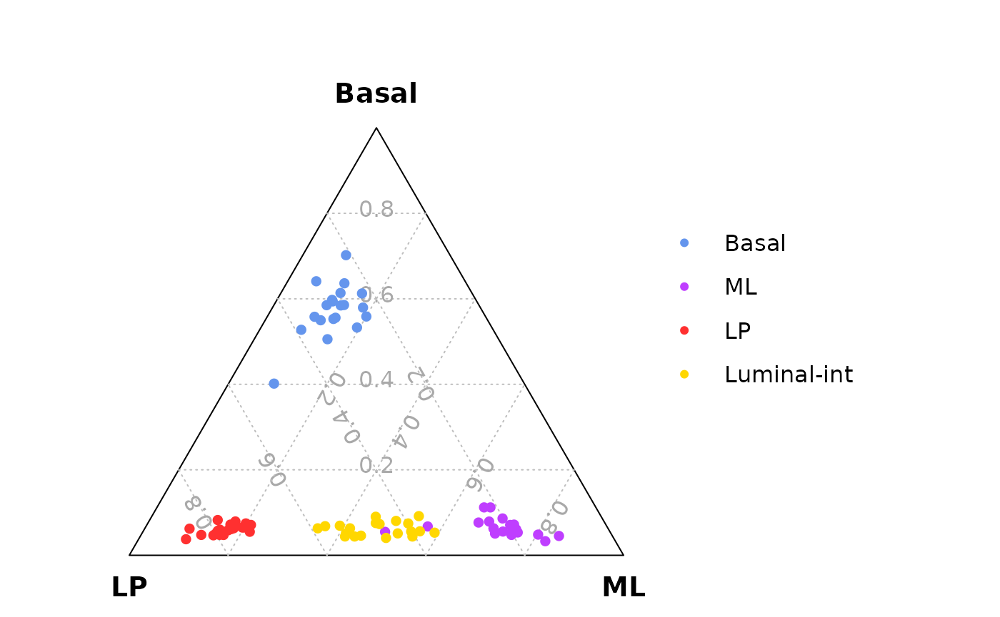
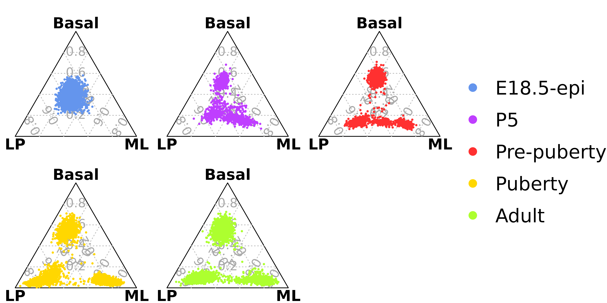
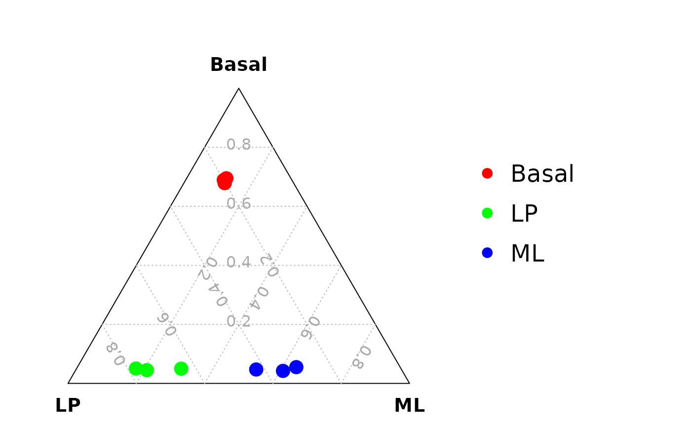
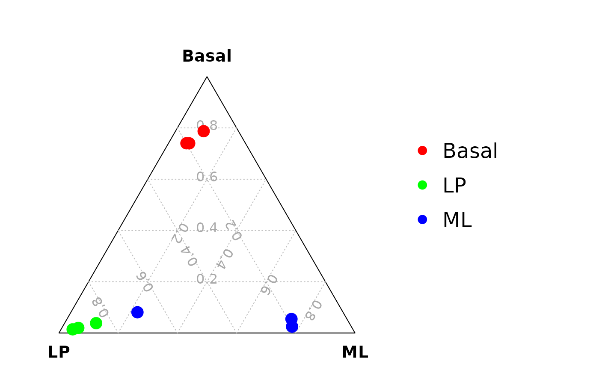

scTernary.RmdTernary plot is a good method to visualize three-dimensional data. scTernary is an easy and user friendly package to show three different single cell populations as well as the potential intermediate cell populations on the ternary plot. The ternary plot method can also be utilized to investigate cell lineage segregation.
The scTernary package can be installed from GitHub by using:
devtools::install_github("jinming-cheng/scTernary")Load package
library(scTernary)Obtain raw count matrix from an example Seurat object
containing cells from adult mouse mammary gland epithelium.
data_exp_mat <- example_seu@assays$RNA@counts
data_exp_mat <- as.matrix(data_exp_mat)
#> Loading required package: Matrix
dim(data_exp_mat)
#> [1] 13750 80Mouse signature genes for Basal, LP and ML cells
head(anno_signature_genes_mouse)
#> GeneID Symbol Chr gene_type
#> 497097 497097 Xkr4 1 Basal
#> 329093 329093 Cpa6 1 Basal
#> 320492 320492 A830018L16Rik 1 Basal
#> 240725 240725 Sulf1 1 Basal
#> 14048 14048 Eya1 1 Basal
#> 226866 226866 Sbspon 1 BasalNumber of signature genes for each cell type
table(anno_signature_genes_mouse$gene_type)
#>
#> Basal LP ML
#> 1470 428 529Prepare data for ternary plot. A constant raw count cut-off of 0 is used to count the number of genes for each signature gene type.
data_for_ternary <- generate_data_for_ternary(
data_exp_mat = data_exp_mat,
anno_signature_genes = anno_signature_genes_mouse,
gene_name_col = "Symbol",
gene_type_col = "gene_type",
weight_by_gene_count = TRUE,
cutoff_exp = 0,
prior_count = 1
)
head(data_for_ternary)
#> Basal LP ML
#> Adult-CGGAGGCTGTCTGA-1 0.06108202 0.03217158 0.01113586
#> Adult-ATCTCAACGAACCT-1 0.13263525 0.04825737 0.03563474
#> Adult-TGGAAGCTTACAGC-1 0.09773124 0.05361930 0.02449889
#> Adult-CTTCTAGACTGTGA-1 0.07329843 0.03753351 0.02672606
#> Adult-AAGACAGATTGGTG-1 0.06806283 0.02949062 0.01336303
#> Adult-TTGAGGACGTTTGG-1 0.06806283 0.08579088 0.01559020Add metadata to the data for ternary plot
data_for_ternary <- cbind(data_for_ternary,example_seu@meta.data)Draw the ternary plot colored by cell type. Mouse mammary gland epithelium contains three major cell types: Basal, LP and ML. In this example, an additional luminal intermediate cell population can be easily observed by using the ternary plot method.
scTernary::vcdTernaryPlot(data_for_ternary,
order_colnames=c(2,3,1),
point_size = 0.5,
group = data_for_ternary$cell_type_label,
show_legend = TRUE,
scale_legend = 0.8,
legend_position = c(0.3,0.5),
legend_vertical_space = 1,
legend_text_size = 1)
The public 10x scRNA-seq data of mouse mammary epithelial cells at different stages reanalyzed by Cheng et al. 2023. F1000Res. can be used to investigate cell lineage segregation or commitment. The ternary plot analysis suggests that the lineages of mammary epithelial cells are segregated at post-natal 5 days (P5).
Load data for ternary plot from Cheng et al generated by
using generate_data_for_ternary function
load(system.file("extdata", "data_for_ternary_Cheng.rda",package = "scTernary"))
head(data_for_ternary_Cheng)
#> Basal LP ML group
#> GSM4994960-AAACCTGAGAGACTTA-1 0.15256688 0.12068966 0.07053942 E18.5-epi
#> GSM4994960-AAACCTGCAAACGCGA-1 0.11424440 0.09605911 0.09128631 E18.5-epi
#> GSM4994960-AAACCTGCACAGCCCA-1 0.17787419 0.18719212 0.11410788 E18.5-epi
#> GSM4994960-AAACCTGGTAGCGTGA-1 0.11352133 0.05665025 0.04149378 E18.5-epi
#> GSM4994960-AAACCTGGTGAAAGAG-1 0.06869125 0.03694581 0.04356846 E18.5-epi
#> GSM4994960-AAACCTGTCAAGGTAA-1 0.08026030 0.06403941 0.03526971 E18.5-epiMouse mammary epithelial cells at 5 different stages
table(data_for_ternary_Cheng$group)
#>
#> E18.5-epi P5 Pre-puberty Puberty Adult
#> 4343 1140 2546 4706 9341Ternary plots of mouse mammary epithelium samples at five different stages. The results demonstrate that mammary epithelial cell lineages are not segregated at embryonic 18.5 days (E18.5), and the cells are segregated at post-natal 5 days (P5) but not well differentiated. At pre-puberty stage the cells are completely segregated and almost well differentiated, and there are many luminal-intermediate cells. At puberty and adult stages, the three cell lineages are clear, and there are fewer luminal-intermediate cells than pre-puberty stage.
# An example of setting figure width and height
n_col = 3
n_row = 2
n_scale_legend = 2
fig_width = 2*n_col + 1*n_scale_legend
fig_height = 2*n_row
# png(filename = "TernaryPlot.png",width = fig_width,height = fig_height,units = "in",res = 300)
vcdTernaryPlot(data = data_for_ternary_Cheng,
order_colnames = c(2,3,1),
group = data_for_ternary_Cheng$group,
facet = TRUE,
point_size = 0.2,
show_legend = TRUE,
legend_point_size = 0.6,
legend_position = c(0.4,0.5),
scale_legend = n_scale_legend)
# dev.off()The number of genes and library size of Fluidigm C1 single cell RNA-Seq data is quite similar to bulk RNA-Seq data. Hence, we use a small bulk RNA-Seq dataset to show the ternary plot analysis for Fluidigm C1 data.
Example bulk RNA-seq data (using CPM)
cpm <- edgeR::cpm(example_dge_data$counts)Three samples for each group
example_dge_data$samples$group
#> [1] LP ML Basal Basal ML LP Basal ML LP
#> Levels: Basal LP MLGenerate data for ternary plot using a CPM cut-off of 100
data_for_ternary <- generate_data_for_ternary(
data_exp_mat = cpm,
anno_signature_genes = anno_signature_genes_mouse,
gene_name_col = "GeneID",
gene_type_col = "gene_type",
weight_by_gene_count = TRUE,
cutoff_exp = 100,
prior_count = 2
)
head(data_for_ternary)
#> Basal LP ML
#> 10_6_5_11 0.02244898 0.34579439 0.07750473
#> 9_6_5_11 0.02040816 0.16822430 0.29300567
#> purep53 0.21020408 0.06074766 0.03402647
#> JMS8-2 0.21496599 0.05841121 0.03591682
#> JMS8-3 0.02380952 0.21495327 0.26654064
#> JMS8-4 0.02040816 0.33878505 0.09451796Drawing the ternary plot
vcdTernaryPlot(data = data_for_ternary,
order_colnames = c(2,3,1),
group = example_dge_data$samples$group,
group_color = c("red","green","blue"),
point_size = 1,
show_legend = TRUE,
legend_point_size = 0.6,
legend_position = c(0.3,0.5),
scale_legend = 1)
We can also find the optimized cut-off for each sample (or cell) to calculate the signature gene proportion for the sample (or cell). The optimized cut-off is estimated by maximizing the coefficient of variation (CV) of the signature gene proportion by a grid search method.
Example bulk RNA-seq data (using logCPM)
lcpm <- edgeR::cpm(example_dge_data$counts,log = TRUE)Three samples for each group
example_dge_data$samples$group
#> [1] LP ML Basal Basal ML LP Basal ML LP
#> Levels: Basal LP MLEstimate a optimized cut-off for each sample (or cell)
estimated_cutoffs <- estimate_optimized_cutoffs(
data_exp_mat = lcpm,
anno_signature_genes = anno_signature_genes_mouse,
gene_name_col = "GeneID",
gene_type_col = "gene_type",
weight_by_gene_count = TRUE,
prior_count = 2,
do_parallel = TRUE,
n_cores = 2
)Generate data for ternary plot
data_for_ternary <- generate_data_for_ternary(
data_exp_mat = lcpm,
anno_signature_genes = anno_signature_genes_mouse,
gene_name_col = "GeneID",
gene_type_col = "gene_type",
weight_by_gene_count = TRUE,
cutoff_exp = estimated_cutoffs,
prior_count = 2
)
head(data_for_ternary)
#> Basal LP ML
#> 10_6_5_11 0.001360544 0.091121495 0.003780718
#> 9_6_5_11 0.001360544 0.004672897 0.018903592
#> purep53 0.100000000 0.025700935 0.009451796
#> JMS8-2 0.031292517 0.004672897 0.003780718
#> JMS8-3 0.001360544 0.011682243 0.003780718
#> JMS8-4 0.001360544 0.063084112 0.003780718Drawing the ternary plot
vcdTernaryPlot(data = data_for_ternary,
order_colnames = c(2,3,1),
group = example_dge_data$samples$group,
group_color = c("red","green","blue"),
point_size = 1,
show_legend = TRUE,
legend_point_size = 0.6,
legend_position = c(0.3,0.5),
scale_legend = 1)